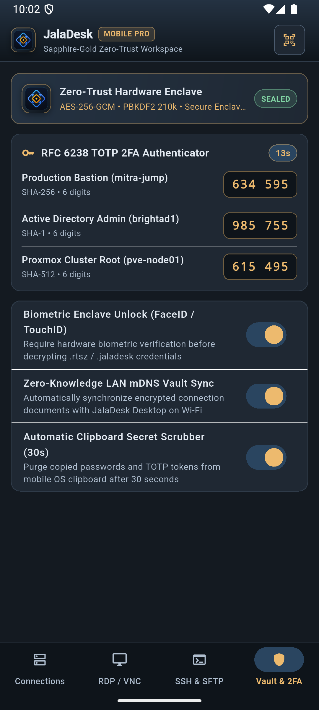

JalaDesk unifies remote desktop, SSH bastions, and zero-knowledge vaults across desktop and mobile.
Built for system administrators, SREs, and infrastructure teams on macOS, Windows, Android, and iOS, JalaDesk brings native RDP, VNC, interactive SSH, dual-pane SFTP, multi-hop Jump Host bastion routing, a built-in RFC 6238 2FA Authenticator, and optional client-side encrypted Cloud Sync into one local-first workspace.
Official Governance:
Privacy Policy
Terms of Service
Package ID com.jaladesk.app

Multi-protocol operations engineered for production fleets
Instead of scattering plaintext connection files, standalone terminal windows, and separate 2FA apps across workstations, JalaDesk consolidates every daily infrastructure protocol inside an authenticated AES-256-GCM vault.
| Subsystem | Protocols & Standards | Operational Capabilities |
|---|---|---|
| Remote Graphical Sessions | RDP (FreeRDP 3.x), VNC (RFB) |
NLA / CredSSP authentication, explicit TLS SHA-256 certificate pinning, live dynamic display resizing, fit-to-window scaling, and opt-in UTF-8 clipboard controls. |
| Shell, Bastions & File Transfer | SSH, SFTP, Jump Host |
Interactive xterm shell, multi-hop ProxyJump bastion chaining, local/remote/SOCKS5 port forwarding, broadcast input, and dual-pane SFTP file management. |
| Vault & 2FA Authenticator | AES-256-GCM, RFC 6238 TOTP |
Hardened scrypt & PBKDF2-HMAC-SHA256 key derivation, SHA-1/SHA-256/SHA-512 2FA codes, App Lock PIN, OS Keychain/Biometrics, and 30-second clipboard scrubbing. |
| Fleet Diagnostics & SRE Studios | 46 Integrated Studios | Built-in DNS/MTR path diagnostics, TLS certificate chain auditing, CIS benchmark checks, SSH CA workflows, hypervisor controls, and Prometheus metrics inspection. |
- Hierarchical Credential Inheritance
- Organize hundreds of hosts into nested folders where credentials, jump hosts, and security policies inherit cleanly without duplicating secrets.
- Deterministic Smart Merge
- Field-level conflict resolution preserves workspace integrity when updating host inventories across desktop workstations and mobile devices.
- Strict Local-First Execution
- Every connection opens directly from your device to the target server you configure. JalaDesk never routes sessions through developer-operated relays.
Native touch precision on Android, iOS, and iPadOS
The JalaDesk Mobile companion (com.jaladesk.app) brings full remote desktop control, SSH/SFTP terminal operations, and hardware-backed credential security to phones and tablets.
- Dual Input Modes for Remote Desktop: Switch instantaneously between relative Virtual Trackpad mode with live coordinate telemetry and Direct Touch mode with pinch-to-zoom and sticky
Ctrl,Alt,Win/Cmd, andF1–F12modifier keys. - Hardware-Backed Enclave & 2FA: Unlock vaults with Android
BiometricPromptor AppleFace ID/Touch ID, generate live 30-secondRFC 6238TOTP codes offline, and auto-scrub copied secrets. - Flexible Vault Synchronization: Pair directly over local network QR sync or synchronize encrypted vaults via optional Google Drive AppData, SFTP, WebDAV, or GitHub Gist.


AES-256-GCM vault and live RFC 6238 TOTP tokens with 30s clipboard scrubber.
Security & Google Drive AppData Sync
JalaDesk requires no user account and works completely offline by default. When you choose to enable optional Google Drive Cloud Sync, your vault is encrypted on your device before leaving JalaDesk and stored solely inside your own Google Account's private Application Data container.
How optional Sign in with Google works in JalaDesk
- Client-Side Zero-Knowledge Encryption: Prior to upload, JalaDesk derives an encryption key locally from your Vault Master Passphrase via
PBKDF2-HMAC-SHA256(100,000iterations) and encrypts the vault blob using authenticatedAES-256-GCM(jaladesk-vault-v1.jvault). Your master passphrase never leaves your device. - Isolated
drive.appdataScope Only: JalaDesk requestshttps://www.googleapis.com/auth/drive.appdataalongside basic Sign-In identity (openid,userinfo.email,userinfo.profile). JalaDesk can access only its own hidden configuration folder and has zero access to your personal Google Drive files, folders, documents, or photos. - Zero Developer Servers: OAuth 2.0 PKCE authentication and Drive API requests occur directly over HTTPS between your device and Google APIs. Developer Rizky Bachtiar Irwanto operates zero backend servers that receive your OAuth tokens, email address, or vault data.
- Full User Control & Instant Revocation: Disconnect your Google account inside JalaDesk at any time, delete hidden app data in Google Drive settings, or revoke access at myaccount.google.com/permissions.
Google API Services User Data Policy Compliance: JalaDesk's use and transfer to any other app of information received from Google APIs adheres strictly to the Google API Services User Data Policy, including the Limited Use requirements. Read the complete disclosures in our Privacy Policy and Terms of Service.
| Requested OAuth Scope | Exact On-Device Purpose |
|---|---|
https://www.googleapis.com/auth/drive.appdata |
Reads, writes, and deletes only JalaDesk's client-side AES-256-GCM encrypted vault container inside your private Google Drive appDataFolder. Cannot access personal Drive files. |
openid |
Completes standard OpenID Connect OAuth 2.0 PKCE authentication directly between your device and Google. |
userinfo.email |
Displays the connected Google account email locally inside JalaDesk's Cloud Sync status panel so you know which account is linked. |
userinfo.profile |
Displays your basic Google account display name locally inside JalaDesk's Cloud Sync settings view. |